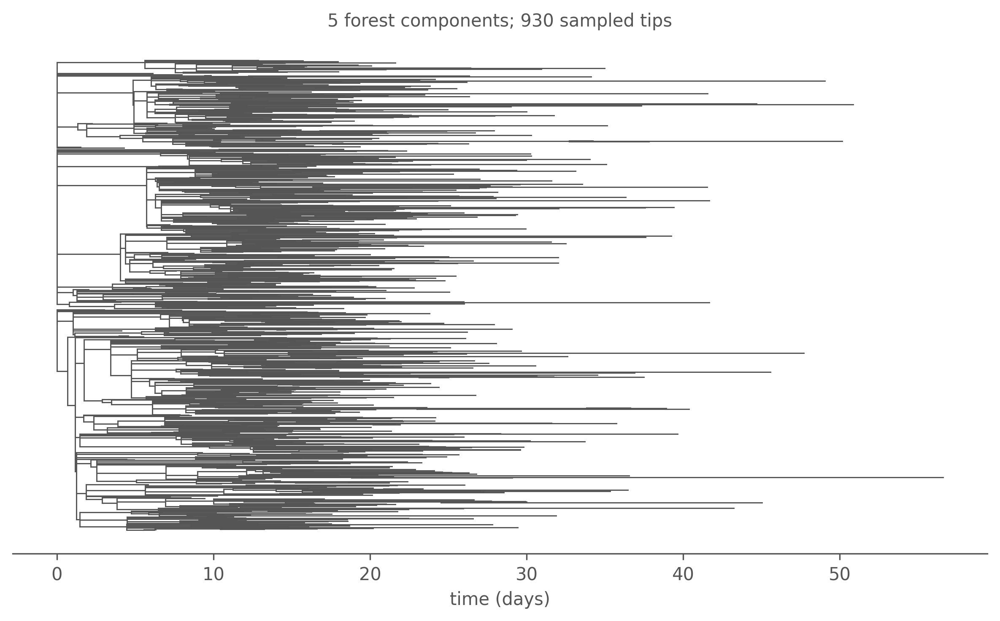
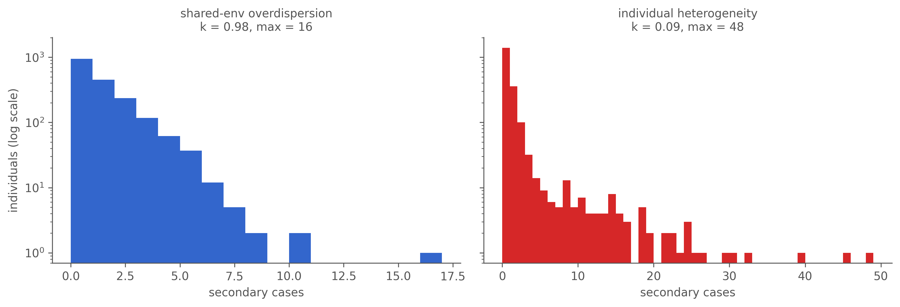
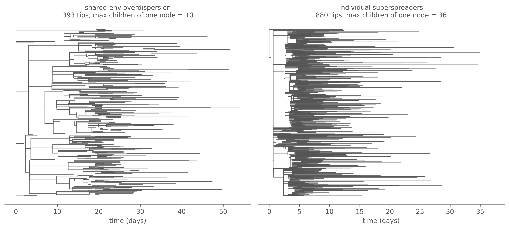
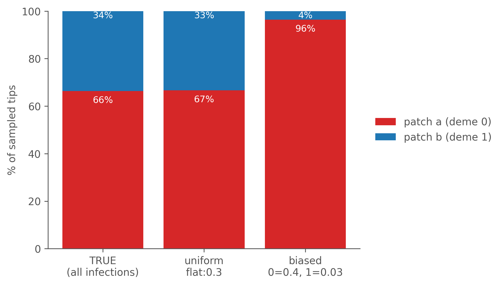

Attaching individual identity to a compartmental epidemic — and why the genealogy is a sample, not a readout
Compartmental simulation models how many individuals occupy each state through time — these are the familiar time-indexed counts S(t), I(t), R(t). However, these models do not model who infected whom. That transmission tree (or, with multiple seeds, a transmission forest) is a central object of contact tracing and outbreak investigation, and it underpins phylodynamic inference: the tree constrains the coalescent events that shape the genealogy of sampled pathogen sequences — the genealogy you reconstruct from those sequences, and that methods like the structured coalescent try to fit. To validate such a method you need synthetic data with a known true tree, which means a simulator that can attach individual identity to a compartmental run.
NoteRelation to existing tree simulators
Conditioning a genealogy on a simulated population trajectory is not new. TiPS (Danesh et al. 2023) takes a compartmental model, runs a Gillespie trajectory, and draws a phylogeny under a backward-in-time coalescent conditioned on that trajectory. MASTER (Vaughan & Drummond 2013) generates genealogies alongside the population histories they correspond to from birth–death master equations.
camdl shares their starting point — a count trajectory governed by compartmental dynamics — but differs in two ways. First, camdl realises the forward transmission tree (an explicit who-infected-whom parentage) and treats the sampled-sequence genealogy as a further within-host draw inside that tree, rather than coalescing lineages backward through the trajectory. Second, camdl’s pipeline architecture is split into three independently cacheable, separately seeded stages (below), and the identity attribution exposes an exact log-probability. The novelty is in this architecture, not in the generative model — which, like TiPS and MASTER, is counts-first and inherits the limitation noted next.
camdl’s lineage layer builds the tree in three stages, each one a data object an infectious-disease modeler already knows:
an event log — the bare compartmental flows, one row per event firing, with no individual identity attached;
a lineage-annotated line list — the same events, except now every transmission has a named parent;
a sampled tree — the line list pruned down to the tips you actually observed, written out as Newick.
Each lineage-annotated line list and its implied transmission tree is not a deterministic readout of the epidemic, but a sample from a distribution of trees consistent with the event log. Each stage of the lineage layer has its own cache key, so one expensive epidemic simulation can generate many cheap sampled genealogies consistent with that event log — which matters, since the genealogy is not pinned down by the event log, and you need many realizations to characterize the distribution of transmission trees.
Before going further, it’s worth being upfront about what this lineage architecture isn’t. Everything rests on one factorization:
That split is exact for the compartmental model — but it runs the real generative story backwards. In an actual outbreak, individuals and their contacts produce the transmission events, and the counts \(S(t)\), \(I(t)\), \(R(t)\) are just the tally that falls out. With camdl, this goes the other way: the compartmental dynamics determine the event firings, flows, and counts first (this is the event log); then the lineage-annotated line list samples an identity attribution consistent with the fixed event log.
The two only agree because mass-action mixing makes infectives mathematically exchangeable (within a pool, once a model has structure/strata). This exchangeability implies that given the counts, every infective is an equally good candidate “parent” (infector), so the tree carries no information the counts hadn’t already pinned down in distribution. But the moment the real epidemic carries structure the compartmental model can’t represent — a contact network, a superspreader, repeated contacts between the same pair — that exchangeability is false. camdl will still hand you the exact genealogy of the model; it is just that the model has become an approximation of that richer reality, so its trees are no longer faithful draws from the true transmission-tree distribution. If you need that realism, you want a different kind of simulator (agent-based, network, multitype branching-process) — the counts-first route trades it for speed and for a likelihood you can actually fit. It’s the same bargain TiPS and MASTER strike.
The payoff, and the reason this earns a chapter instead of a --tree flag: the tree is not a deterministic readout of the epidemic. One count trajectory defines a whole distribution of transmission trees.
Three artifacts, three seeds
Those three stages map onto three commands, and each command has its own independent stochastic seed — this is what makes resampling lineage-annotated line lists and transmission trees given the event log so cheap:
Stage
Command
Produces
1. Event log
simulate --event-log
the epidemic: ordered events, identity-free
2. Line list
lineage realize --identity-seed
one genealogy realisation + its exact log-probability
3. Tree
lineage tree --scheme --sample-seed
a pruned Newick tree over randomly sampled tips
One expensive epidemic → many cheap identity realizations → many cheap sampled trees. The --seed argument passed to the camdl simulate call drives the dynamics (which events fire, when), --identity-seed determines the lineage-annotated line list and full transmission tree (which infective is the parent at each transmission), and --sample-seed sets the observations (which tips you actually sample from the full genealogy). The line list already is the complete transmission tree; the tree step only samples observed tips from it, so it is its own stochastic stage with its own seed. Change either of the last two and the epidemic never re-runs.
Not every transition is a transmission, so you mark the ones that are with #[lineage] — only those produce a parent→child event:
transitions {#[lineage]infection : S --> I @ beta * S * I / Nrecovery : I --> R @ gamma * I}
Enabling lineage tracking never changes the count dynamics — a --event-log run is byte-identical to a plain run at the same seed.
The pipeline, end to end
We start with a plain single-population SIR (R₀ = β/γ = 3), simulated with the exact Gillespie backend so the genealogy carries no sub-step approximation.
The event log is identity-free: per event it stores the time, the transition, and — at #[lineage] events — the evaluated per-pool infector masses (lineage_weights). A few rows:
The rows with transition = 0 are the transmission events (the transitions we annotated with #[lineage], and these consequently carry weights used to sample individuals for the next lineage-annotated line list step); transition = 1 are recovery events (no weights). This event log is self-contained; downstream sampling of lineage-annotated line lists and transmission trees need only this log — no model file is required (see Appendix: Anatomy of the event log for the full schema, what lineage_weights mean, and how realize reconstructs a genealogy from it). Realizing it under an identity seed samples a concrete parent for every transmission and reports the exact log-probability of that attribution:
lineage realize: wrote line list to transmission-trees/results/line_list.parquet (parquet); identity-seed 7, 1889 edges, log P(line list | event log) = -22025.186546
sub-dt bias: 0.000 (exact — Gillespie event log)
The lineage-annotated line list is the event log with identity filled in by a random sample consistent with the event log’s counts and weights. It is the complete — each row now names the individual that moved and, for transmissions, its parent_id:
Non-transmissions get parent_kind = none and parent_id = -1. The attribution_logprob is the exact log-probability of each draw: the first recovery scores \(\log(1/8) = -2.079\) (uniform over 8 infectives), the first infection \(\log(1/5) = -1.609\). Summed over rows, that gives the only clean exact likelihood the architecture provides, \(\log P(\text{line list}\mid\text{event log}) = \sum_{\text{events}} \log P(\text{attribution})\). (The source/destination/deme columns are covered in the appendix.) There is no cheap full-tree likelihood: recovery attributions are not independent of the tree, so any tree likelihood needs a combinatorial marginalisation — which is exactly what structured-coalescent methods approximate.
Finally, we can project the line list as a sampled Newick tree. Because the seed infectives (\(I_0 = 8\)) each found their own lineage, the result is in general a forest — one tree per independent introduction:
forest = parse_newick(Path(f"{RES}/tree.nwk").read_text())forest.sort(key=lambda r: r.n_tips(), reverse=True)fig, ax = plt.subplots(figsize=(8, 5))plot_forest(forest, ax, max_components=6, linewidth=0.7)ax.set_title(f"{len(forest)} forest components; "f"{sum(r.n_tips() for r in forest)} sampled tips", fontsize=10)fig.tight_layout()plt.show()

Figure 7.1: One realised transmission forest from the SIR epidemic (50% flat sampling, Gillespie — exact). Each connected component descends from a distinct seed infective; branch lengths are calibrated in days, tips placed at sampling (removal) time. The largest few components are shown.
Bursts and superspreaders: what a tree can and can’t see
Now, we explore how the tree responds to different sources of variability in the epidemic — with the goal of clarifying what camdl’s tree can and cannot see, and why. The two models below both make the epidemic burstier — but only one of them leaves a mark on the genealogy. It turns on exactly where the extra variability lives.
A common modelling choice is environmental (extra-demographic) noise on the transmission rate — gamma white noise of intensity \(\sigma_{se}\) multiplying the force of infection, following He, Ionides & King (2010, J. R. Soc. Interface7:271–283). The two models below are identical except that the second wraps the infection rate in overdispersed(·, sigma_se):
# sir_lineage.camdl — plain#[lineage]infection : S --> I@ beta * S * I / N
# sir_lineage_od.camdl — overdispersed#[lineage]infection : S --> I@overdispersed(beta * S * I / N, sigma_se)
This overdispersion is transparent to the individual attribution: the parent sampler still extracts the same per-infective weight \(\beta S/N\) for every infective, so the genealogy is just as well-defined as before.
One practical wrinkle: overdispersed() injects its noise through the chain-binomial backend, not the exact Gillespie scheme we used above — so to compare the two models fairly we run both on chain-binomial at the same step dt = 0.05.1 Any difference between them is then the noise itself, not the backend.
You might expect that adding noise to the transmission rate would create superspreading — a few individuals throwing off many secondary cases, the heavy-tailed offspring distribution measured by the dispersion parameter \(k\) (negative binomial; Lloyd-Smith, Schreiber, Kopp & Getz, 2005, Nature438:355–359, where \(k<1\) signals a minority of cases driving most transmission). It does not — and the reason is structural. The environmental noise \(\xi(t)\) is a shared multiplier on the whole population’s force of infection, so in the parent-attribution probability for any infection event,
the factor \(\xi(t)\) appears in every term and cancels. Conditional on an infection occurring, who the parent is does not depend on the noise — so the genealogy’s shape should be statistically identical with and without it. Measuring across several genealogy realisations confirms it (\(k\) over all infected individuals including the ~half who infect nobody; tree-shape indices on the largest sampled component):
Every genealogical statistic overlaps within its across-realisation spread: the transmission tree is essentially blind to environmental overdispersion. The noisy model shows a slightly wider, slightly lower \(k\) — a second-order effect, because an individual whose infectious window happens to overlap a burst accumulates a few more offspring — but there is no systematic shift into the superspreading regime, and the topology indices do not move at all. If you want individual superspreading in a tree you need individual-level heterogeneity (a contact network, an individual-rate model), not a shared rate multiplier.
The noise has to go somewhere — and it goes into the count trajectory, not the genealogy. The same two runs produce visibly different incidence curves: the overdispersed run is far burstier, with sharper peaks and day-to-day swings the plain run never shows.
Figure 7.2: Daily incidence from the two runs (chain-binomial, dt = 0.05, same dynamics seed). Environmental overdispersion lives here — in the variability of the count trajectory — not in the transmission tree. overdispersed() is the right tool for fitting noisy incidence time series (its purpose in He et al.); it is the wrong tool for generating heavy-tailed individual offspring.
A burst in the counts is not a star in the tree
The overdispersed curve has a pronounced spike — a burst of infections in a narrow window. The instinct from outbreak investigation is to read a burst as a superspreader event: one infectious individual throwing off many secondary cases, which in a transmission tree is a star — a single node with a fan of children. Dissect the biggest burst, though, and that instinct fails:
Table 7.2
overdispersed run — biggest single-day burst (day 19):
289 infections, traced to 222 distinct parents (1.30 each)
most attributed to any single individual: 4
The burst traces back to nearly as many distinct parents as there are infections — barely more than one each, a handful at most from any individual. It is not a star. It is a horizontal band across the tree: when \(\xi(t)\) spikes, the force of infection rises for everyone at once, so many ordinary infectives each transmit one extra time in the same window.
ImportantA burst in the counts need not be a burst in the tree
We reflexively equate a transmission burst with a superspreader — one node spraying out children, a star. But a shared-environment burst is the opposite shape: many separate lineages each gaining a tip at the same time, a horizontal band, not a star. The incidence time series cannot tell the two apart — both are a spike in daily cases. The genealogy can: a star concentrates parentage on one individual; a band spreads it across the whole infectious pool. This is exactly why fitting noisy incidence with overdispersed() is sound, yet reading superspreading off that same noise would be a mistake.
Why the tree is blind: an information argument
The genealogy is assembled entirely from the per-event attribution \(P(\text{parent}=j) = w_j I_j / \sum_b w_b I_b\) — the only channel through which individual-level structure enters the tree. A shared multiplier \(\xi(t)\) scales every \(w_j\) identically and cancels, so it carries zero information about which individual is the parent: the mutual information between “a burst occurred” and “individual \(j\) transmitted” is zero, and a zero-capacity channel cannot encode it. For heterogeneity to show up in the tree it must live in the weights \(w_j\) themselves — it must be attached to individuals, so that conditioning on a transmission concentrates the attribution (low entropy) onto the high-\(w_j\) individuals. Shared-in-time variation has no capacity through this channel; individual variation has full capacity.
Putting the heterogeneity on individuals
So move the dispersion from the environment to the individual. A fraction \(p_{hi}\) of infections become superspreaders (compartment I_hi) with transmission weight \(c\) times an ordinary case — the heterogeneity now lives in the per-individual weight, exactly where the information argument says it must:
let force = beta * S * (I_lo + c * I_hi) / N # I_hi carries weight c, I_lo weight 1#[lineage] infect_lo : S --> I_lo @ force * (1 - p_hi)#[lineage] infect_hi : S --> I_hi @ force * p_hi
Now the genealogy lights up. The offspring distribution grows a heavy tail that the shared-environment run never did:
show code
def offs(tag): ll = load_line_list(f"{RES}/ll_{tag}.parquet") tr, uni = infected_universe(ll)return offspring_counts(tr["parent_id"].to_list(), uni)fig, axes = plt.subplots(1, 2, figsize=(11, 3.8), sharey=True)for ax, tag, title, col in [(axes[0], "od", "shared-env overdispersion", "#3366cc"), (axes[1], "ss", "individual heterogeneity", "#d62728")]: o = offs(tag); k = dispersion_k(o) ax.hist(o, bins=range(0, int(o.max()) +2), color=col) ax.set_yscale("log"); ax.set_xlabel("secondary cases") ax.set_title(f"{title}\nk = {k:.2f}, max = {int(o.max())}", fontsize=10)axes[0].set_ylabel("individuals (log scale)")fig.tight_layout(); plt.show()

Figure 7.3: Offspring distributions — secondary cases per infected individual, over all infected (including the non-transmitters), counts log-scaled. Shared-environment overdispersion (left) stays near-Poisson, k ≈ 1, indistinguishable from no noise. Individual heterogeneity (right) is heavy-tailed: a few superspreaders with dozens of offspring drag k far below 1.
show code
def max_outdeg(n):returnmax([len(n.children)] + [max_outdeg(c) for c in n.children]) if n.children else0fig, axes = plt.subplots(1, 2, figsize=(11, 5))for ax, tag, title in [(axes[0], "od", "shared-env overdispersion"), (axes[1], "ss", "individual superspreaders")]: camdl("lineage", "tree", f"{RES}/ll_{tag}.parquet", "--scheme", "flat:0.5","--sample-seed", "3", "-o", f"{RES}/tree_{tag}.nwk") big =max(parse_newick(Path(f"{RES}/tree_{tag}.nwk").read_text()), key=lambda r: r.n_tips()) plot_forest([big], ax, linewidth=0.6) ax.set_title(f"{title}\n{big.n_tips()} tips, max children of one node = {max_outdeg(big)}", fontsize=10)fig.tight_layout(); plt.show()

Figure 7.4: Largest transmission tree: shared-environment overdispersion (left) vs individual superspreaders (right), sampled at flat 50%. The superspreader tree carries visible stars — single individuals with a fan of children (max out-degree annotated) — that the shared-environment tree lacks.
The superspreader model puts a heavy tail on the offspring distribution — a handful of individuals cause a large share of all transmission — and grows visible stars in the tree, because the heterogeneity is carried by the individual attribution weights, the one place the genealogy can see. The shared-environment model, despite a far burstier epidemic curve, leaves no such mark. A transmission tree is blind to when transmission is variable, and sharp-eyed about who.
Who you sequence shapes what you see
The genealogy you actually observe is filtered by sampling — which infected individuals get sequenced. camdl samples over all individuals (an infector can be a tip), at a per-deme rate. To see how decisive sampling is, we use a deliberately asymmetric two-patch SIR: patch a and patch b mix through an asymmetric contact matrix (\(C_{ba}=1.5 \gg C_{ab}=0.3\)) and start with unequal infectious seeds. We simulate it once (Gillespie, exact), realise one genealogy, then project the same line list under two sampling regimes.
First, the truth: where does transmission actually happen? From the line list’s parent_deme → deme flows:
Transmission is not balanced — patch a is the dominant hub, originating the large majority of infections and accumulating about two-thirds of cases. Now compare what two sampling designs recover about that composition:
show code
id2deme =dict(zip(ll2["individual"].to_list(), ll2["deme"].to_list()))def tip_composition(nwk): forest = parse_newick(Path(nwk).read_text()) ids = tip_ids(forest) d0 =sum(1for i in ids if id2deme.get(i) ==0)returnlen(ids), d0labels, d0s, d1s = [], [], []labels.append("TRUE\n(all infections)"); d0s.append(true0); d1s.append(tot-true0)for nwk, lab in [(f"{RES}/uniform.nwk", "uniform\nflat:0.3"), (f"{RES}/biased.nwk", "biased\n0=0.4, 1=0.03")]: n, d0 = tip_composition(nwk); labels.append(lab); d0s.append(d0); d1s.append(n-d0)d0s = np.array(d0s, float); d1s = np.array(d1s, float); tots = d0s + d1sfig, ax = plt.subplots(figsize=(7, 4))ax.bar(labels, 100*d0s/tots, color=DEME_COLOR[0], label="patch a (deme 0)")ax.bar(labels, 100*d1s/tots, bottom=100*d0s/tots, color=DEME_COLOR[1], label="patch b (deme 1)")for i, (a, t) inenumerate(zip(d0s, tots)): ax.text(i, 100*a/t -5, f"{100*a/t:.0f}%", ha="center", color="white", fontsize=9) ax.text(i, 100-3, f"{100*(t-a)/t:.0f}%", ha="center", color="white", fontsize=9)ax.set_ylabel("% of sampled tips"); ax.set_ylim(0, 100)ax.legend(loc="center left", bbox_to_anchor=(1.02, 0.5), frameon=False)fig.tight_layout(); plt.show()

Figure 7.5: Apparent deme composition of the sampled tips under uniform vs deme-0-heavy sampling, against the true infection composition. Uniform sampling recovers the truth; biased sampling collapses patch b from a real third of all transmission down to a few percent — making a major compartment look like a negligible sink.
Figure 7.6: The same epidemic, two sampling designs, tips coloured by patch (red = a, blue = b); the four largest forest components shown. Uniform sampling (left) preserves the true red/blue mixture; the deme-0-heavy design (right) yields an almost entirely red tree — read naively, patch b looks like a minor sink when it is in fact a third of all transmission.
This is the motivation for modelling the sampling process in inference: the observed tree is a convolution of true transmission and observation effort, and you cannot read transmission structure off a tree without knowing who was sequenced.
Tree statistics through an epidemiological lens
Three families of summary statistic recur in phylodynamics. Computed here on the uniform-sampling forest above:
The first two are computed above; the third — the most useful — deserves its own figure. Lineages-through-time counts the sampled tree’s ancestral lineages at each moment, and its early near-exponential rise tracks the epidemic growth rate. Push that one step further and you get a skyline: in each interval between coalescent events, \(\Delta t \cdot \binom{A}{2}\) estimates a coalescent \(N_e\). For an SIR genealogy the pairwise coalescent rate is \(\lambda = 2f/I^2 = 2\beta S/(NI)\), where \(f = \beta SI/N\) is incidence and \(I\) is prevalence, so \(N_e \propto I^2/f\). During exponential growth \(S \approx N\) and that collapses to \(N_e \propto I\) — prevalence (not incidence, and not \(I^2/f\) in general; the proportionality to prevalence is a growth-phase result, which is exactly the regime where the tree carries signal). So the tree alone can reconstruct the prevalence trajectory. Let us check it against the truth, on a cleanly single-introduction epidemic (so the whole epidemic is one tree):
Figure 7.7: Top: the skyline reconstructed from the tree (rescaled, since the absolute level is sampling- and rate-dependent) against the true prevalence I(t) from the simulation. Bottom: the same tree, sharing the time axis. The skyline rises with prevalence through the growth phase as lineages accumulate, gets noisy near the peak (coalescences become rapid), and loses signal in the decline — by then the sampled lineages have already found their common ancestors. The genealogy is most informative about epidemic growth.
That figure is the chapter’s thesis in one frame: the transmission tree is a lens on the epidemic — it carries the growth trajectory, and through \(k\) the superspreading structure — but only what the sampling lets through, and only where the coalescent had events to inform it. Of the three statistics, offspring dispersion \(k\) has the most direct epidemiological cargo: it is the superspreading parameter that governs whether targeted control beats blanket control, and it responds to mechanism. Sackin and Colless are shape descriptors useful for comparing trees, without a one-to-one epidemiological reading.
What this is — and isn’t
Be clear about the boundaries of the current feature:
These are transmission trees (infection-time / sampling-time branch lengths), not viral phylogenies — there is no within-host coalescent and no sequence evolution.
Stratified sampling keys on the integer deme index (0, 1), not stratum names; a model-level lineage { sampling } block with named strata and rates-as-parameters is a future milestone.
Only the line-list log-probability exists. There is no tree-likelihood scoring and no native tree inference yet — the architecture deliberately stops at synthetic-data generation, which is what validating a phylodynamic method needs.
Appendix: Anatomy of the event log
The event log is meant to be self-contained — lineage realize reconstructs the whole genealogy from it without ever seeing the model file. It’s worth seeing how, because if you open the parquet yourself the columns look almost too sparse to support that claim.
Each row is one event firing: time, an integer transition, batching bookkeeping (multiplicity, batched, step), and lineage_weights — a bare list of numbers, populated only at #[lineage] events:
The numbers are unlabelled, and there’s no model file in sight. Two things make this work, and both live in the parquet’s file-level metadata rather than the rows:
camdl.event_log.transitions describes every transition: its source and destination pool (so replay knows which compartment gains or loses an individual), whether it’s lineage-tracked, and — the key field — parent_pools, an ordered list of [pool, deme] pairs. That list is the label for lineage_weights. For the two-patch model, transition 0 (infection into patch a) carries parent_pools = [[2,0],[3,1]] — pool 2 = \(I_a\), pool 3 = \(I_b\) — so its weight vector reads as a distribution over source pools:
So a new infection in patch a is sourced from patch b with probability ~0.81 here — unsurprising at \(t=0\), when \(I_b = 40 \gg I_a = 5\). initial_pools = [[0,2,5],[1,3,40]] seeds the rest: deme 0 / pool 2 starts with 5 infectives, deme 1 / pool 3 with 40.
realize then just replays forward: seed the per-pool rosters from initial_pools, walk the rows in time order minting a fresh individual into the destination pool on each infection and removing one on each recovery, and at every #[lineage] event normalise the weights, pick a source pool by parent_pools, and draw a parent uniformly from that pool’s current roster. The only quantity it couldn’t recompute is the evaluated rate weights (they depend on \(\beta\), the contact matrix, and \(N\) at firing time) — which is exactly, and only, what gets persisted.
One caveat if you go poking: a lineage_weights vector is meaningless pulled out on its own. Its labels live in parent_pools, so if you extract the column into a TSV the mapping has to travel with it.
Chain-binomial trees are approximate: events are batched per dt step, so any parent→child edge shorter than dt is dropped, and realize reports that loss fraction (printed with the table below). Because both runs share the same dt, the loss is common to both and cancels out of the comparison — unlike the exact-Gillespie tree earlier, which has no such bias.↩︎